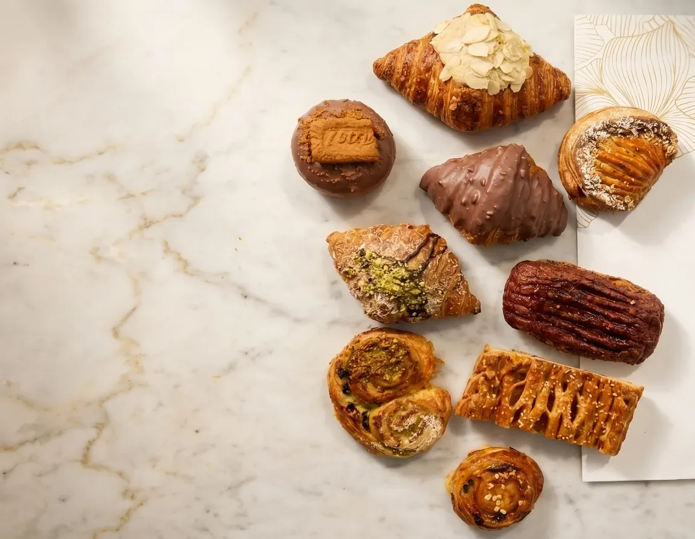
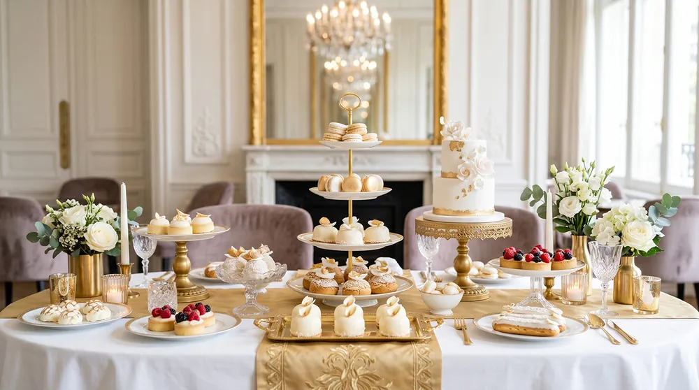
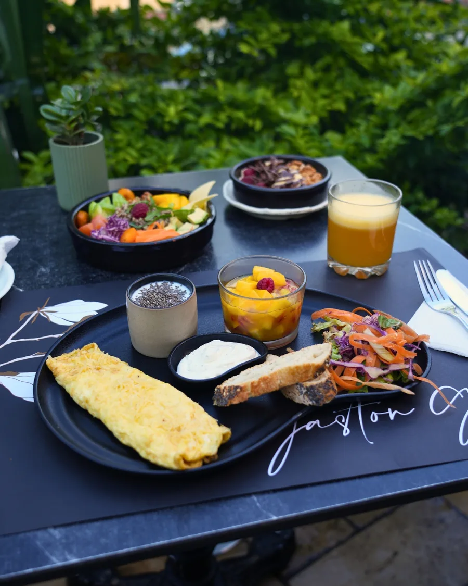

01
Our story
Gaston Gali was born of a simple conviction: in Morocco, a celebration is first recognised by the quality of the welcome.



 Boutique
BoutiqueEntremets, viennoiseries, Moroccan gift boxes and wedding cakes. For you, or to give.
Discover the showcase
Dine inBreakfasts, brunches, mains and sweets, in the heart of Hay Riad.
See the menu Made to measure
Made to measureWeddings, seminars and VIP evenings. Cuisine, service and staging, anywhere in Morocco.
Request a quoteEntremets, tarts, viennoiseries and Moroccan pastries, shaped by hand. Single, by the tray or in a gift box.
The showcaseFrom breakfast to dessert: brunches, slow-cooked dishes, crêpes, waffles and homemade drinks.
The menuWeddings, seminars, VIP evenings and custom wedding cakes, in Rabat and across Morocco.
Plan my event
Gaston Gali brings together a pâtisserie, a café and a caterer in Hay Riad, Rabat. Weddings, private parties, thesis defences, corporate events, buffets and open spaces: every format has its own codes, and we work on the table, the service and the staging with quiet exactness.
Discover our receptionsGaston Gali was born of a simple conviction: in Morocco, a celebration is first recognised by the quality of the welcome.
We do not seek to impress through excess, but to compose an experience that is right, elegant and sincere.
Hosting is a deeply Moroccan art: it takes taste, restraint, attention and a great deal of respect.